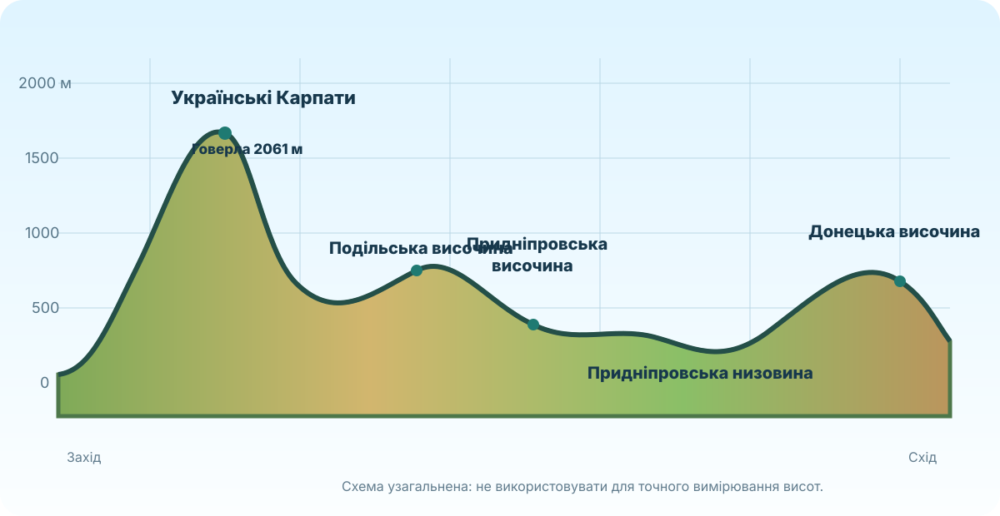

Україна переважно рівнинна. То чому рельєф усе одно настільки важливий?
Ваше завдання — не вивчити список височин і низовин, а довести за картою, як рельєф керує напрямком стоку, складністю будівництва доріг, мікрокліматом і навіть тим, де зручніше вести господарство.
Де, на Вашу думку, середні абсолютні висоти будуть вищими?
Гіпсометрична карта: висота читається кольором
На орографічній карті знайдіть Карпати, Кримські гори, Поліську, Придніпровську й Причорноморську низовини, Подільську, Придніпровську та Донецьку височини.
Орографічна карта України ↗Карти рельєфу України ↗OpenTopoMap ↗2061 м
Говерла
200–500+
переважно вищі рівнини
0–200
нижчі рівнини
не колір
а висота й форма поверхні
Профіль поверхні: карта «в розрізі»

Яка частина профілю різко піднімається вище за решту? Чим гірський рельєф відрізняється від височин не лише висотою, а й крутістю?
Де профіль опускається до найнижчих значень? Чому низовина не обов’язково лежить біля моря?
Чим Подільська височина відрізняється від Придніпровської низовини за абсолютною висотою та загальним виглядом поверхні?
Рельєф впливає не лише на «красиві краєвиди»
Вода стікає з вищих ділянок до нижчих. Вододіли часто проходять по підвищеннях, а долини концентрують стік.
Гори змушують повітря підніматися, охолоджуватися й віддавати вологу. Висота також знижує температуру.
Круті схили, долини й перевали ускладнюють трасування доріг. На рівнинах будувати простіше, але заболочені низовини теж створюють проблеми.
Схил впливає на змив ґрунту. На крутіших ділянках ерозія зазвичай сильніша, особливо без рослинного покриву.
Люди частіше обирають відносно рівні й безпечні поверхні, але водні ресурси й транспортні шляхи можуть змінювати цей вибір.
Рельєф визначає придатність земель, умови будівництва, можливості гідроенергетики, туризму та лісового господарства.
форма рельєфу → висота / крутість → процес → наслідок для людини або природи
Приклад: крутий схил → швидший поверхневий стік → посилення ерозії → складніше землеробство без протиерозійних заходів.
«Куест біля Сімферополя»: що можна передбачити лише за рельєфом?
Уявіть маршрут із рівнинної частини передгір’я до Кримських гір. Які зміни Ви очікуєте побачити?
Оберіть найкращу відповідь.
Перевіряємо не пам’ять, а вміння читати рельєф
Чи можна назвати рельєф «каркасом» інших природних компонентів?
Не пише «гори впливають на клімат». Він пояснює механізм: повітря піднімається схилом → охолоджується → водяна пара конденсується → змінюється кількість опадів.
§15 + мініаудит рельєфу своєї місцевості
1) Опрацюйте §15 електронного підручника. 2) Відкрийте OpenTopoMap або іншу карту рельєфу своєї місцевості. 3) Визначте: приблизну абсолютну висоту, найближчу долину/балку/підвищення та один практичний наслідок рельєфу для дороги, забудови, стоку або землеробства. 4) Додайте 2–3 речення доказу.
Електронний підручник / ВШО ↗OpenTopoMap ↗